Textilarbeiten
2026
In letzter Zeit beschäftige ich mich verstärkt mit Textilarbeiten unter Verwendung alter als auch selbstbemalter Stoffe. Es entstand eine ganze Serie gleichen Formats (40x50) mit sowohl gegenständlichen als auch abstrakten Darstellungen.
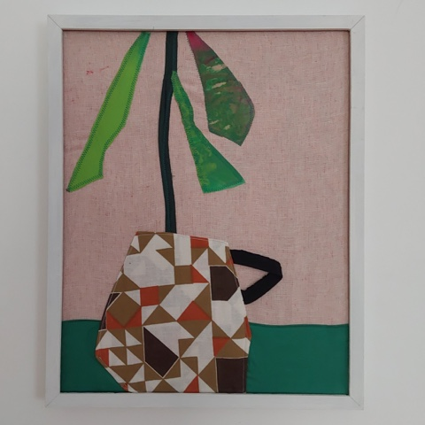
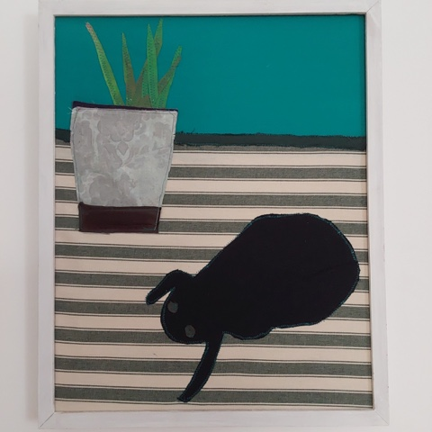
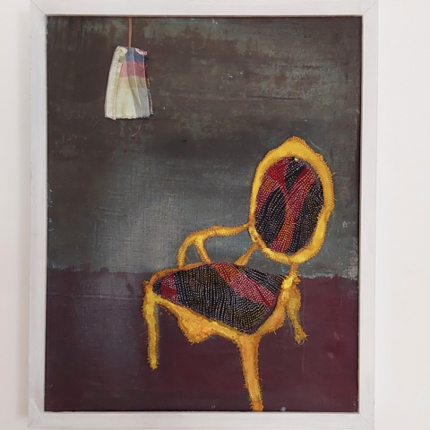
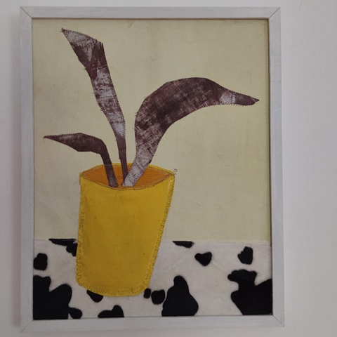
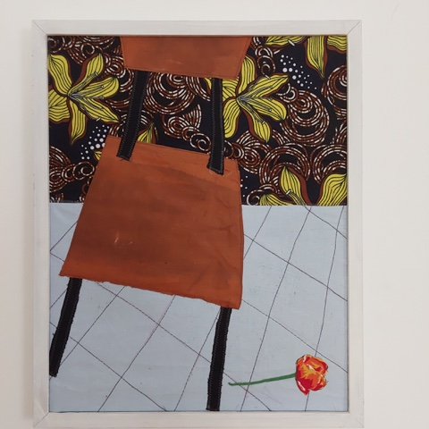
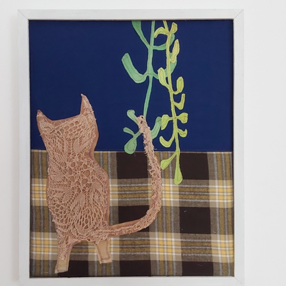
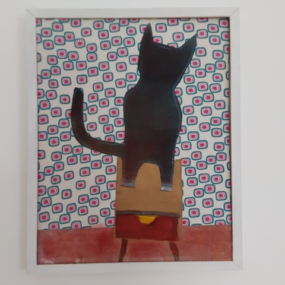
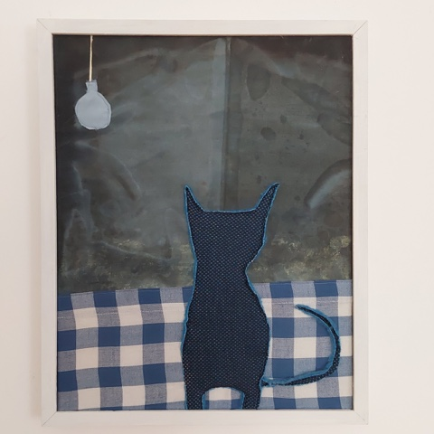
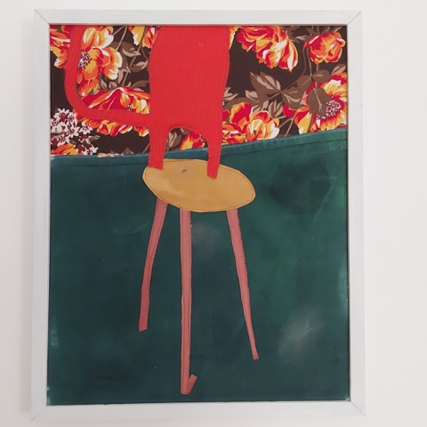
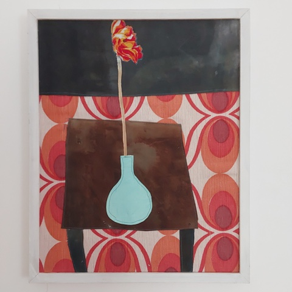
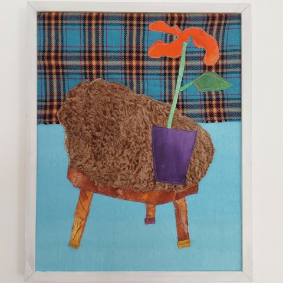
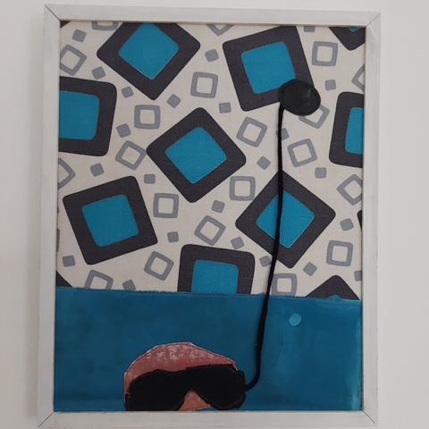
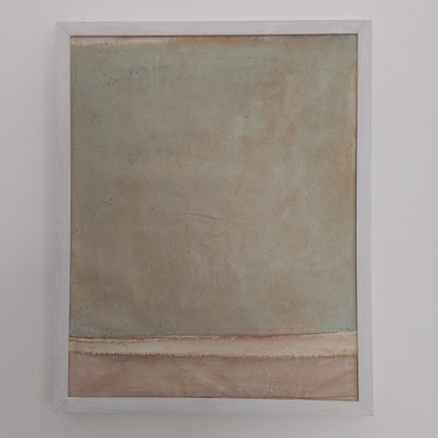
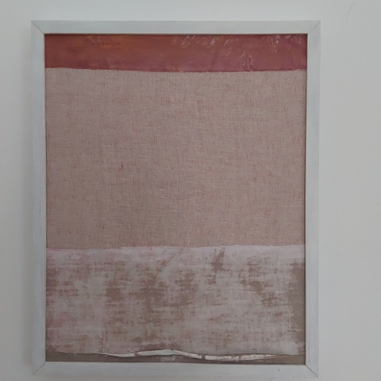
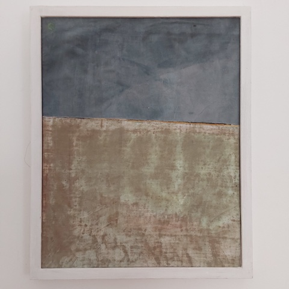
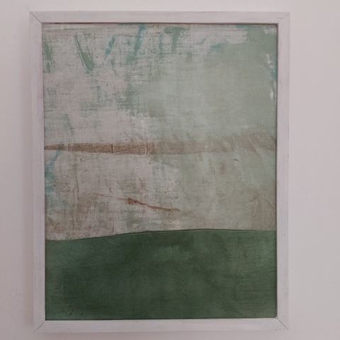
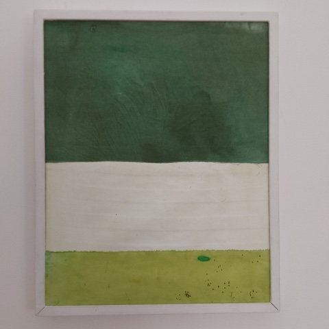
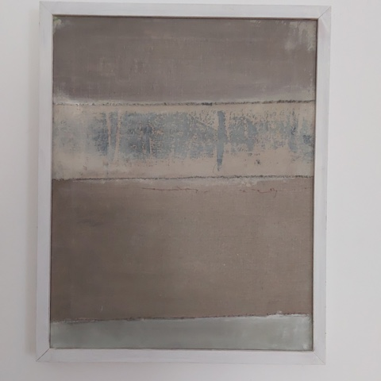
2021-2025